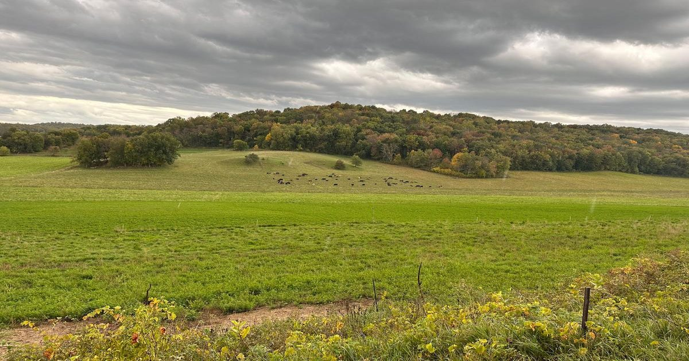

Где расцветает земельная этика
Забота об этой планете влечет за собой интимные решения о наших фермах, наших домах, нашем человеке и наших диких соседях - Крейг МайерПрочитайте на Aeon

Забота об этой планете влечет за собой интимные решения о наших фермах, наших домах, нашем человеке и наших диких соседях - Крейг МайерПрочитайте на Aeon